| Participante | RM | Turma |
|---|---|---|
| Anderson Huang | 565920 | 2TCNPZ |
O tema CitizenTech propõe o uso de tecnologia para resolver problemas reais do cotidiano. Um dos mais visíveis nas cidades brasileiras é a manutenção urbana: buracos em vias, iluminação pública apagada, vazamentos na rede de água, descarte irregular de lixo. Hoje o cidadão costuma depender de canais lentos e pouco transparentes para registrar e acompanhar esses problemas.
O projeto open source CivicLens (licença MIT) é uma plataforma de gerenciamento de ocorrências urbanas que endereça exatamente esse problema. Este trabalho utiliza o CivicLens como referência (Opção B do enunciado) e concentra o esforço na engenharia DevSecOps: garantir que cada alteração no software seja testada, analisada quanto a qualidade e segurança, empacotada, publicada e implantada de forma automatizada e confiável. Para um serviço público digital, isso significa entregar novas funcionalidades ao cidadão com rapidez sem abrir mão de segurança.
O backend original do CivicLens depende de PostgreSQL com PostGIS, Redis, MinIO e módulos de IA (torch, transformers, nltk). Uma varredura do Trivy nas dependências pinadas do projeto original encontrou 14 vulnerabilidades CRITICAL e dezenas de HIGH, em pacotes como pillow, torch, nltk e python-jose. Como o enunciado permite adaptar apenas o backend FastAPI, foi construída uma versão enxuta que preserva o modelo de domínio (categorias, severidade e fluxo de status da ocorrência) e remove as dependências que não agregam ao objetivo da disciplina.
| Método | Rota | Função |
|---|---|---|
| GET | /health | Health check com a versão (tag da imagem) em execução |
| GET | /api/v1/ocorrencias | Lista ocorrências, com filtros por status e categoria |
| GET | /api/v1/ocorrencias/{id} | Detalhe de uma ocorrência |
| POST | /api/v1/ocorrencias | Registra ocorrência e gera protocolo (ex.: CL-2026-00004) |
| PATCH | /api/v1/ocorrencias/{id}/status | Atualiza status respeitando o fluxo recebida, em andamento, resolvida ou rejeitada |
| GET | /api/v1/estatisticas | Totais por status e severidade |
| GET | /api/v1/categorias | Categorias aceitas (vias, água, iluminação etc.) |
Stack: Python 3.14, FastAPI, Pydantic, Uvicorn e PyJWT (módulo de token). Testes com pytest (15 testes, 100% de cobertura). A imagem Docker é multi-stage, baseada em python:3.14.10-alpine3.24, executa com usuário não-root, sem pip em runtime, com healthcheck, e o container roda com filesystem somente leitura e sem capabilities.
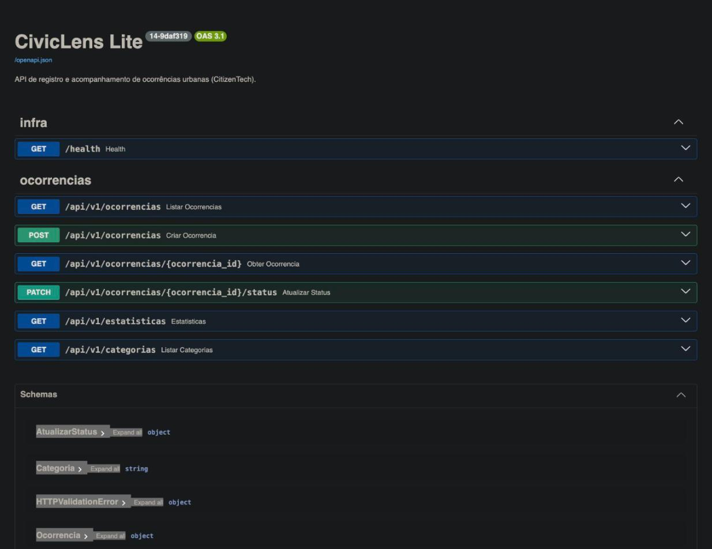
Toda a plataforma roda em uma instância EC2 Ubuntu 24.04 (t3.large, 8 GB de RAM, 40 GB gp3 criptografado) na região us-east-1, provisionada com Terraform. Jenkins, SonarQube, PostgreSQL e a aplicação são containers Docker na mesma rede devsecops. O Jenkins é uma imagem própria com Docker CLI, Docker Compose, AWS CLI e Trivy, configurada inteiramente por código (Jenkins Configuration as Code), inclusive o job da pipeline.
| Ferramenta | Versão | Papel |
|---|---|---|
| GitHub | n/a | Versionamento e gatilho via webhook de push |
| Jenkins | 2.580.2 LTS (JDK 21) | Orquestração CI/CD com Jenkinsfile declarativo |
| SonarQube Community | 26.11 | Análise estática, cobertura e Quality Gate |
| SonarScanner CLI | 8.4 | Envio da análise a partir do Jenkins |
| Trivy | 0.76.2 | Varredura de vulnerabilidades da imagem |
| Docker / Compose | 29.9 / 5.7 | Build da imagem e deploy |
| Amazon ECR | n/a | Registry privado, scan on push e lifecycle de 20 imagens |
| Terraform | 1.5 | Provisionamento de EC2, ECR, IAM, security group e Elastic IP |
.env com permissão 600 na instância. O Jenkins publica no ECR usando a IAM Role da EC2 (sem access keys), com permissão restrita ao repositório da aplicação. O IMDSv2 é obrigatório. O security group libera Jenkins, SonarQube, aplicação e SSH apenas para o IP do aluno, e a porta do Jenkins também para as faixas de webhook publicadas pelo GitHub. O webhook do SonarQube para o Jenkins é assinado com HMAC.Repositório público andhuangg/gs-civiclens-devsecops com código, testes, Dockerfile, docker-compose, Jenkinsfile, infraestrutura (Terraform) e plataforma (Jenkins e SonarQube como código). O README traz instruções de execução local, reprodução da plataforma e identificação do participante.
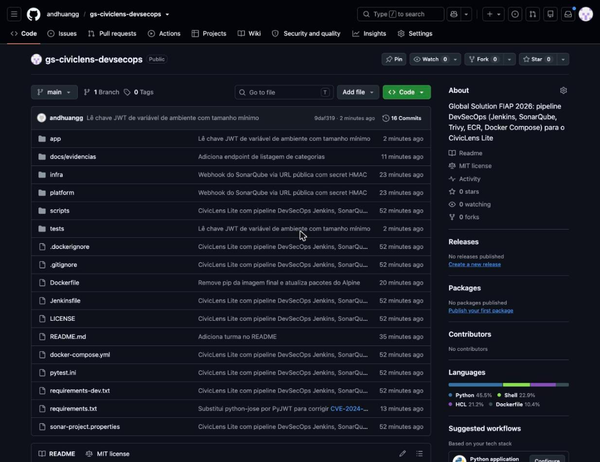
O Jenkinsfile declarativo possui os nove estágios exigidos. O disparo é automático via githubPush(): o GitHub envia o evento de push para /github-webhook/ e o Jenkins inicia o build. Todos os builds do histórico foram iniciados por push ("Started by GitHub push by andhuangg"), exceto o build #2, disparado manualmente para validar a correção da etapa de Quality Gate antes do commit.
| Estágio | Implementação | Bloqueia quando |
|---|---|---|
| Checkout | checkout scm, tag BUILD-SHA (ex.: 14-9daf319) | |
| Testes automatizados | pytest em container Python, JUnit e coverage.xml publicados | teste falha ou dependências não resolvem |
| Análise SonarQube | withSonarQubeEnv + sonar-scanner | |
| Quality Gate | waitForQualityGate abortPipeline: true | gate reprovado |
| Docker Build | build multi-stage com APP_VERSION = tag | erro de build |
| Trivy Scan | relatórios TXT, JSON e HTML (HIGH e CRITICAL) e gate --severity CRITICAL --exit-code 1 | existe CRITICAL |
| Publicação no ECR | login via IAM Role, push da tag versionada e latest | falha de push |
| Deploy | docker compose up -d com a imagem recém publicada | falha de subida |
| Validação funcional | scripts/smoke-test.sh: health, versão exata, GET, POST (201) e estatísticas | resposta inesperada |
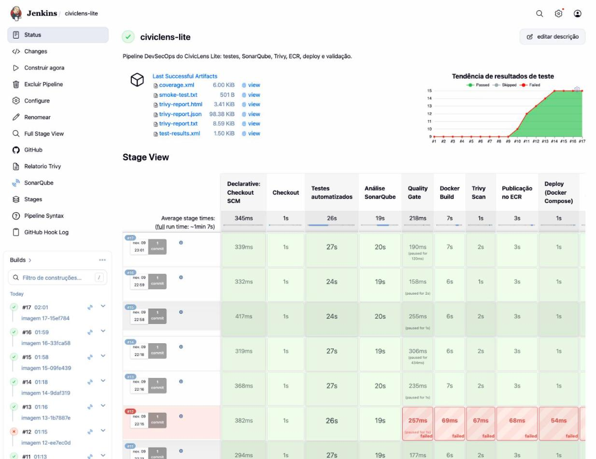
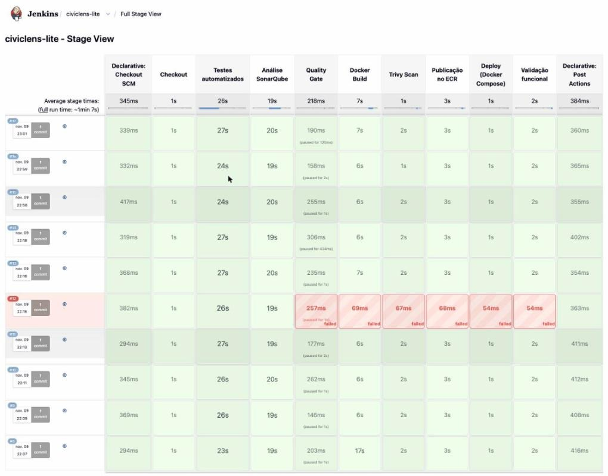
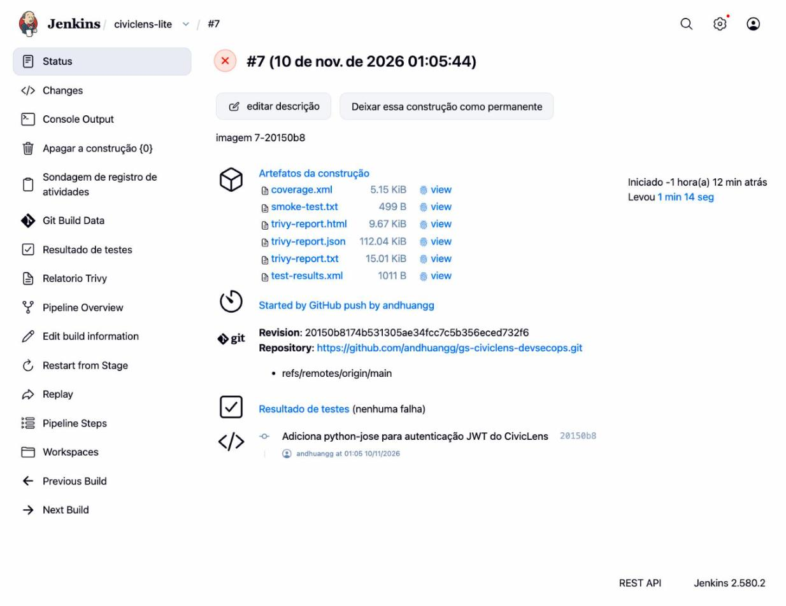
O Jenkins envia código, cobertura (coverage.xml) e resultados de teste (JUnit) ao SonarQube. Foi criado o Quality Gate CivicLens Gate, definido como padrão por script de bootstrap, combinando as condições "Clean as You Code" do SonarQube com condições adicionais sobre o código total:
| Métrica | Reprova quando | Escopo |
|---|---|---|
| Cobertura | < 80% | código total e código novo |
| Reliability, Security e Maintainability Rating | pior que A | código total |
| Linhas duplicadas | > 3% | código total e código novo |
| Novos issues | > 0 | código novo |
| Security Hotspots revisados | < 100% | código novo |
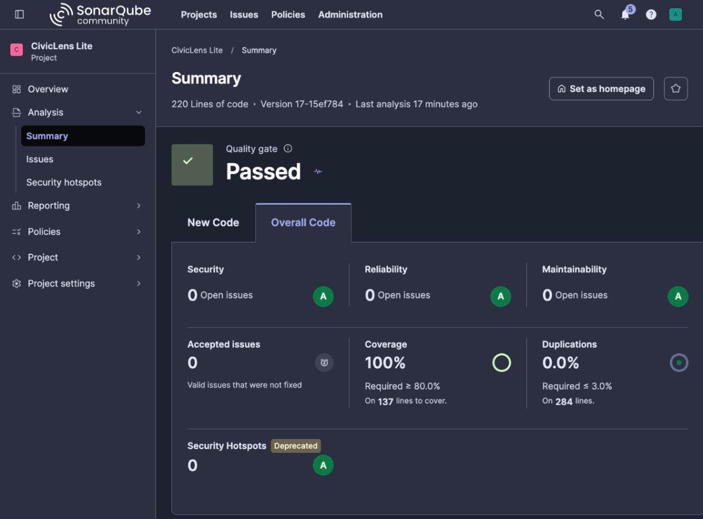
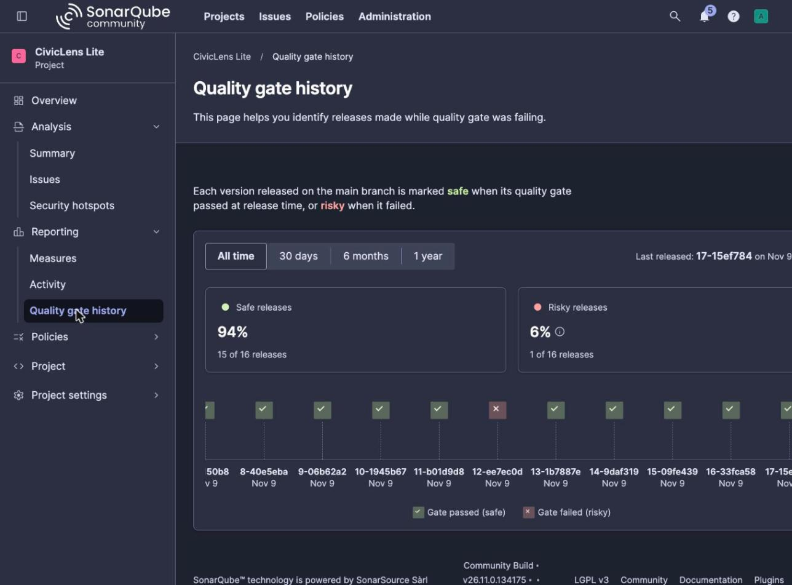
Após o build, o Trivy analisa a imagem e gera três relatórios (tabela no log, JSON e HTML publicado no Jenkins), listando HIGH e CRITICAL e um resumo por severidade. Em seguida executa o gate --severity CRITICAL --exit-code 1, que interrompe a pipeline se existir qualquer vulnerabilidade CRITICAL. Nenhum controle foi desabilitado: não há --ignore-unfixed, .trivyignore ou exceções.
Cada build aprovado publica a imagem no ECR com a tag NUMERO_BUILD-SHA_DO_COMMIT e atualiza latest. O deploy usa Docker Compose com a tag exata; a validação confirma que a versão respondida pelo /health é a mesma do build, garantindo que o que está no ar é o que foi testado e analisado.
$ aws ecr describe-images --repository-name civiclens-lite --filter tagStatus=TAGGED tags pushedAt 2-bb0a848 2026-11-09T21:56:58 8-40e5eba 2026-11-09T22:08:54 3-b048c8f 2026-11-09T21:58:31 9-06b62a2 2026-11-09T22:10:35 4-e10c677 2026-11-09T22:01:36 10-1945b67 2026-11-09T22:12:33 6-b52b93f 2026-11-09T22:05:17 11-b01d9d8 2026-11-09T22:14:05 13-1b7887e 2026-11-09T22:18:02 latest, 14-9daf319 2026-11-09T22:19:34 Builds 5, 7 e 12 foram bloqueados pela pipeline e por isso nao possuem imagem publicada.
$ docker ps NAMES IMAGE STATUS civiclens-app 345843269906.dkr.ecr.us-east-1.amazonaws.com/civiclens-lite:14-9daf319 Up (healthy) jenkins civiclens-jenkins:local Up sonarqube sonarqube:26.11.0.134175-community Up sonar-db postgres:18.6-alpine3.24 Up
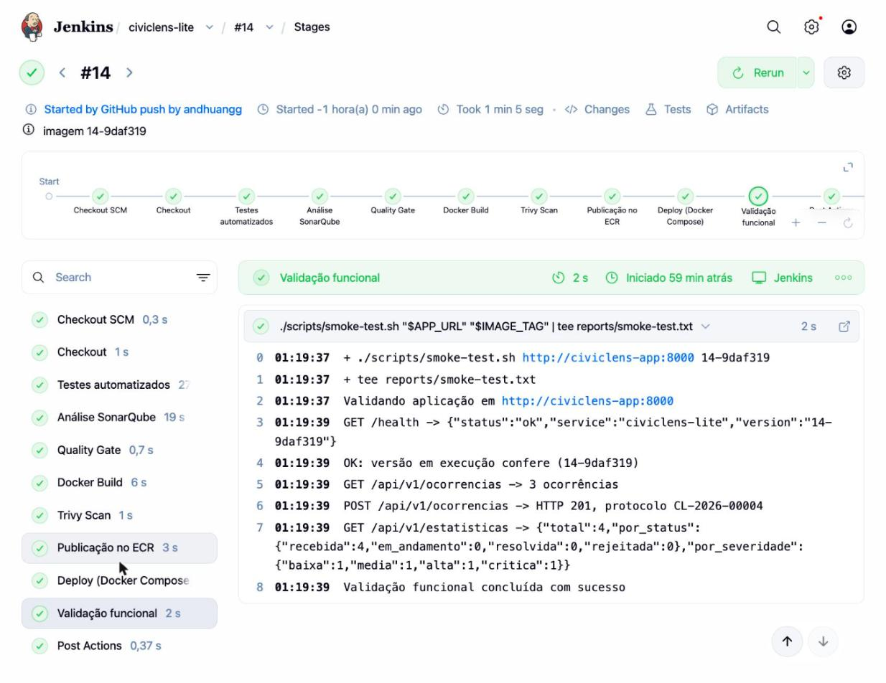
| Indicador (build #14) | Resultado |
|---|---|
| Linhas de código | 220 |
| Testes | 15 passando, 0 falhas |
| Cobertura | 100% |
| Bugs / Vulnerabilidades / Code smells / Hotspots | 0 / 0 / 0 / 0 |
| Reliability / Security / Maintainability | A / A / A |
| Duplicação | 0% |
| Quality Gate | Aprovado |
| Build | CRITICAL | HIGH | MEDIUM | LOW | Situação |
|---|---|---|---|---|---|
| #3 | 0 | 1 | 2 | 1 | Aprovado. HIGH CVE-2025-47273 (setuptools vendorizado no pip) e MEDIUM no zlib |
| #4 | 0 | 0 | 0 | 0 | Após hardening da imagem |
| #7 | 2 | 1 | 1 | 0 | Bloqueado: python-jose 3.3.0 |
| #8 a #14 | 0 | 0 | 0 | 0 | Após troca por PyJWT |
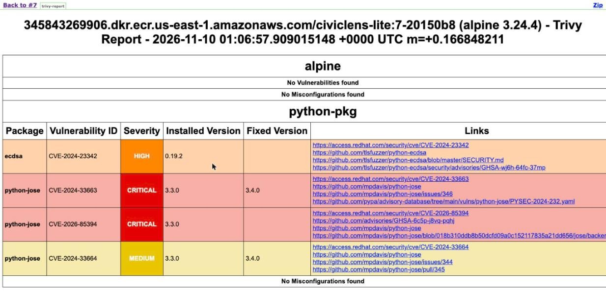
| Build | Gatilho | Resultado | Duração | Observação |
|---|---|---|---|---|
| #1 | push | ABORTED | 364 s | Quality Gate sem retorno do webhook (seção 7, caso 1) |
| #2 | manual | SUCCESS | 105 s | Validação da correção do webhook |
| #3 | push | SUCCESS | 72 s | Trivy reporta 1 HIGH (não bloqueante) |
| #4 | push | SUCCESS | 67 s | Hardening: 0 vulnerabilidades |
| #5 | push | FAILURE | 20 s | Bloqueio nos testes (caso 2) |
| #6 | push | SUCCESS | 63 s | Correção do caso 2 |
| #7 | push | FAILURE | 74 s | Bloqueio no Trivy (caso 3) |
| #8 | push | SUCCESS | 75 s | Correção do caso 3 |
| #9 a #11 | push | SUCCESS | 66 a 69 s | Novas funcionalidades (categorias e token JWT) |
| #12 | push | FAILURE | 51 s | Bloqueio no Quality Gate (caso 4) |
| #13 | push | SUCCESS | 68 s | Correção do caso 4 |
| #14 | push | SUCCESS | 65 s | Chave JWT movida para variável de ambiente |
| #15 em diante | push | SUCCESS | cerca de 65 s | Commits de documentação, evidências e relatório |
Logs completos de cada execução estão em docs/evidencias/logs no repositório.
Além da falha controlada exigida, foram documentadas falhas reais encontradas durante a implementação. Em todos os bloqueios, nenhuma imagem foi publicada no ECR e a versão em produção permaneceu a anterior, que é exatamente o comportamento esperado de uma esteira DevSecOps.
Sintoma. No build #1, o estágio Quality Gate ficou em PENDING até o timeout de 5 minutos, embora a análise tivesse terminado.
Análise. O log do Compute Engine do SonarQube mostrou a causa:
WARN Failed to send webhook 'jenkins' | url=http://jenkins:8080/sonarqube-webhook/ | message=Invalid URL: loopback, wildcard, link-local, site-local, multicast, cloud metadata addresses ... are not allowed for webhooks.
O SonarQube 26 bloqueia webhooks para IPs privados como proteção contra SSRF, e o nome jenkins resolve para um IP interno da rede Docker.
Correção. Em vez de desligar a proteção (sonar.validateWebhooks=false), o webhook passou a usar a URL pública do Jenkins, com secret HMAC validado pelo plugin, e o security group recebeu uma regra liberando a porta 8080 apenas para o próprio Elastic IP. Build #2 aprovado, com o Quality Gate respondendo em cerca de 1 segundo.
Falha. Commit fixando h11==0.14.0 (CVE-2025-43859, CRITICAL, HTTP request smuggling).
Bloqueio. Build #5 falhou no estágio de testes em 20 segundos; os demais estágios foram pulados.
ERROR: Cannot install -r requirements.txt (line 2), h11==0.14.0 and httpx2 because these package versions have conflicting dependencies. ERROR: ResolutionImpossible
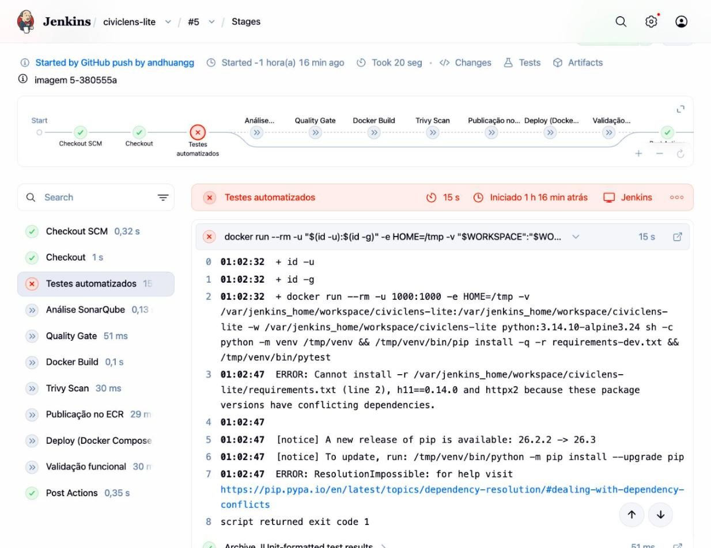
Análise e correção. O httpx2, usado nos testes, exige h11>=0.16, e o resolvedor do pip recusou a versão vulnerável antes do build da imagem. O pin foi removido e o build #6 foi aprovado.
Falha. Para preparar a autenticação JWT, foi adicionada a dependência usada no CivicLens original, python-jose==3.3.0.
Bloqueio. Testes, SonarQube e build passaram; o Trivy bloqueou o build #7 e ECR, deploy e validação foram pulados. A aplicação no ar continuou na versão 6-b52b93f.
Total: 3 (HIGH: 1, CRITICAL: 2) ecdsa CVE-2024-23342 HIGH 0.19.2 (sem correção) python-ecdsa: vulnerable to the Minerva attack python-jose CVE-2024-33663 CRITICAL 3.3.0 3.4.0 python-jose: algorithm confusion with OpenSSH ECDSA keys python-jose CVE-2026-85394 CRITICAL 3.3.0 (sem correção) ERROR: script returned exit code 1
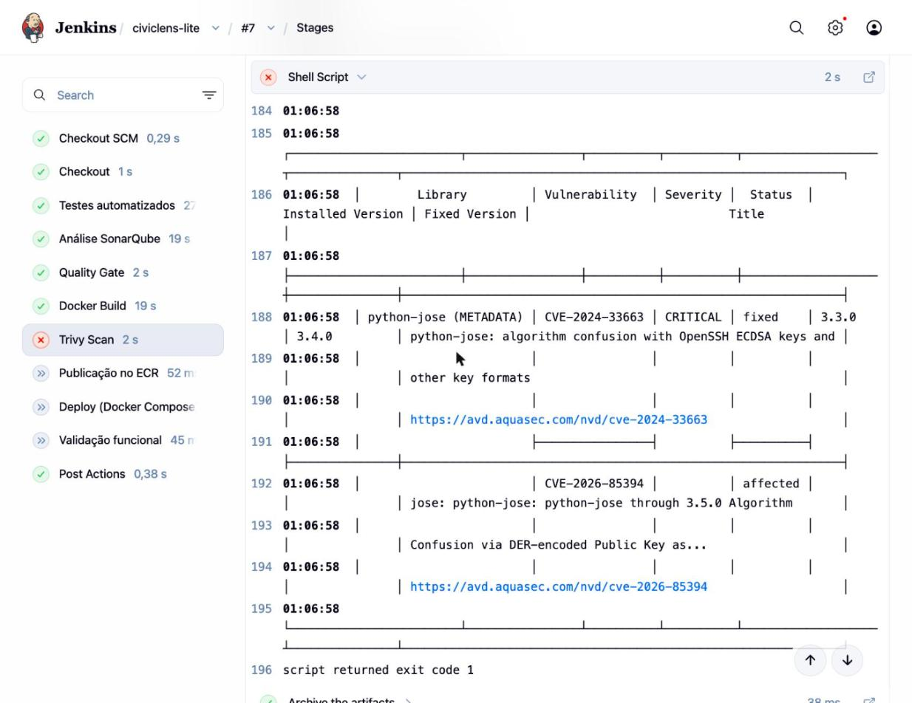
Análise. Atualizar para 3.4.0 resolveria apenas uma das CRITICAL; a CVE-2026-85394 e o HIGH do ecdsa (dependência transitiva) não têm correção disponível.
Correção. Substituição da biblioteca por PyJWT 2.15.1, mantida ativamente e sem dependência do ecdsa. Validada com trivy fs antes do commit; build #8 aprovado com 0 vulnerabilidades.
Falha. Função extrair_usuario criada como "atalho" para registrar em auditoria o usuário do token, decodificando o JWT com options={"verify_signature": False}. Os testes passavam.
Bloqueio. O SonarQube detectou a regra python:S5659 (Vulnerability, CRITICAL) e o build #12 foi abortado no Quality Gate.
SonarQube task '61b346c7...' completed. Quality gate is 'ERROR' ERROR: Pipeline aborted due to quality gate failure: ERROR Condições reprovadas: security_rating = 4 (D), limite 1 (A) | new_violations = 1, limite 0 python:S5659 CRITICAL VULNERABILITY app/auth.py:20 "Don't use a JWT token without verifying its signature."
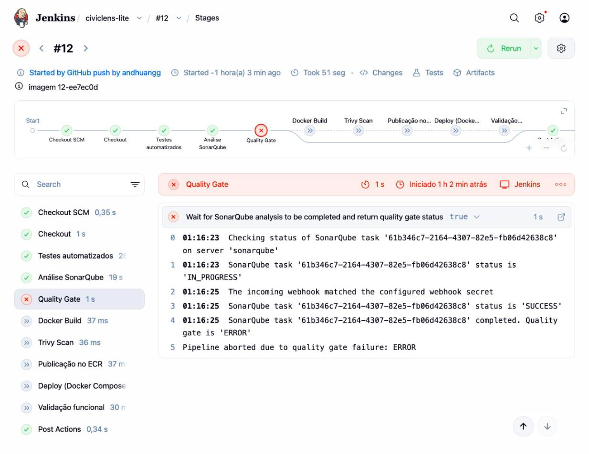
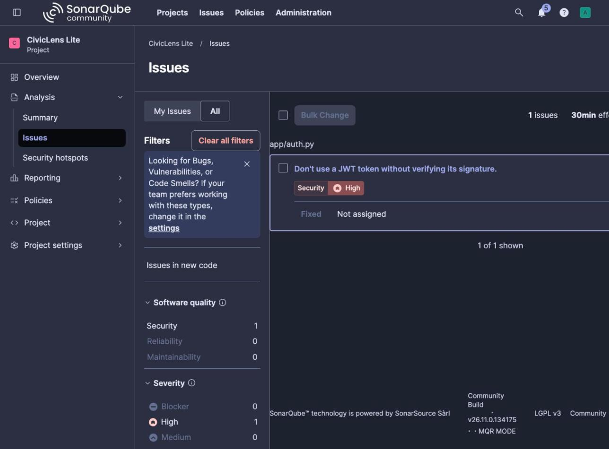
Correção. A função passou a reutilizar validar_token, que verifica assinatura e expiração, e foi criado um teste garantindo que um token adulterado é rejeitado. Build #13 aprovado. No build #14 a chave JWT, que estava fixa no código, passou a ser lida de variável de ambiente com tamanho mínimo de 32 caracteres.
A pipeline entrega o fluxo completo exigido, de forma automatizada e reprodutível: cada push no GitHub resulta, em cerca de 1 minuto, em uma imagem testada, analisada, verificada quanto a vulnerabilidades, publicada com versão rastreável até o commit e implantada com validação funcional. Os três tipos de bloqueio (teste, qualidade e segurança) foram comprovados com execuções reais antes e depois da correção.
vm.max_map_count) e memória; a plataforma foi para uma EC2 t3.large provisionada por Terraform.| Item | Link |
|---|---|
| Repositório GitHub | https://github.com/andhuangg/gs-civiclens-devsecops |
| Publicação no LinkedIn | LINK_LINKEDIN |
| Projeto de referência (MIT) | https://github.com/tejasbhor/Civiclens |